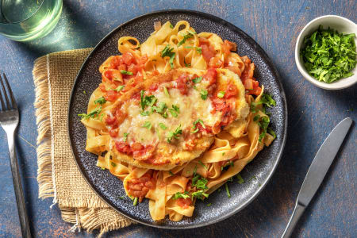

Home
Chicken Parm

Description
This dish is a delicious twist on a classic favorite: tender, breaded chicken breast baked with a rich tomato sauce and a layer of melted cheese, served over perfectly cooked tagliatelle. Fresh herbs add a burst of flavor and color, making it as beautiful as it is satisfying.
Whether you're cooking for yourself or sharing with loved ones, this comforting plate of pasta and chicken brings that warm, home-cooked feeling to the table. It's a hearty, feel-good meal that’s both nourishing and irresistibly tasty.
Ingredients
- 2 Onions
- 2 cloves of Garlic
- 60g Grated Parmesan
- 100g Breadcrumbs
- 500g Fettucine
- 10g Parsley
- 600g Tomato Sugo
- 500g Chicken Breast
- 100ml of Oil
- 2Tbsp Olive Oil
- 50g Flour
- 2 Eggs
- Salt
- Pepper
Steps
- Preheat your oven to 220 °C top/bottom heat (200 °C fan oven). Heat plenty of water in a kettle. Halve the onion, peel it and chop finely. Also peel the garlic and chop finely (or use a garlic press).
- In a small saucepan, heat 2 tbsp olive oil and sauté chopped onion for 2 – 3 minutes until soft and translucent. Add garlic and sauté until fragrant, 1 minute more. Add the tomato sugo to the pot. Reduce heat, stir and simmer for approx. 2 minutes. Then season with salt* and pepper*.
- While the sauce is simmering, place the chicken breasts between 2 layers of baking paper and pound them slightly with a meat mallet (or rolling pin) until they are about 2 cm thick. Mix 50g of flour, salt and a pinch of pepper in a deep plate. In a second deep plate whisk 2 eggs. Place the breadcrumbs in a third deep plate. First coat the chicken breasts in flour, then dip them in the egg and finally coat them in breadcrumbs.
- Heat enough oil in a large pan to cover the bottom. When the oil is hot, fry the chicken breasts for 2 minutes on each side until golden brown. Then place on a baking tray lined with baking paper. Pour plenty of hot water into a large pot, add salt and bring to a boil. Cook the fettuccine for 10 – 12 minutes until al dente. While the fettuccine is cooking, go to step 5.
- Spread each chicken breast with 2 tablespoons of tomato sauce and sprinkle with the grated parmesan. Then bake on the baking tray in the oven for 8 – 10 minutes until the chicken breasts are no longer pink inside. Meanwhile, finely chop the parsley leaves.
- Drain the fettuccine through a sieve and mix with the remaining tomato sauce in a large pot. Place the pasta on a plate, place the chicken breast on top and sprinkle with parsley. Enjoy!